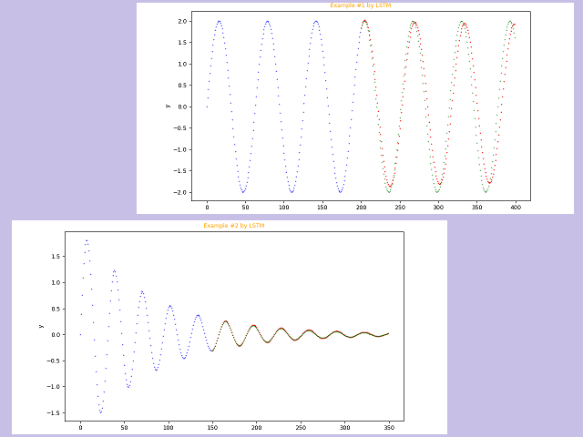
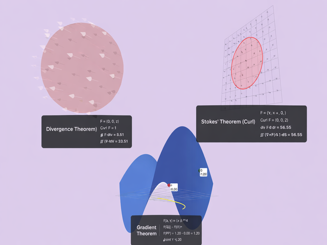
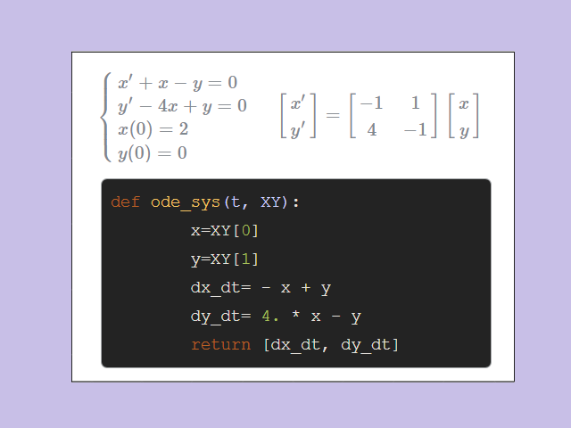
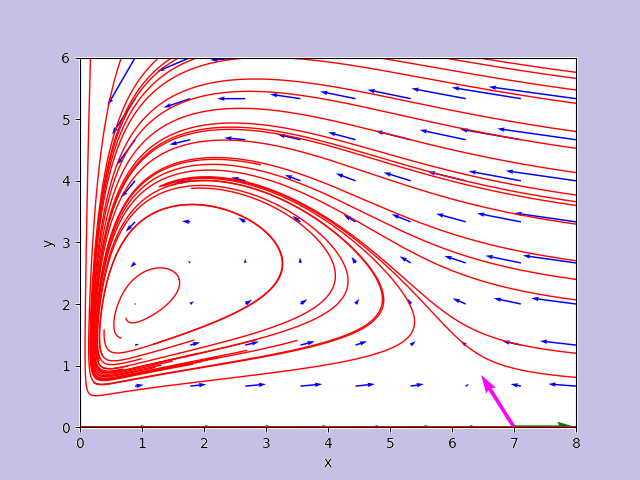
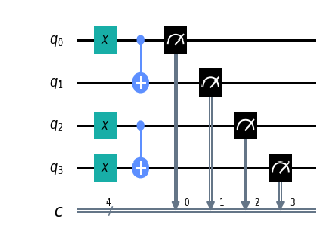
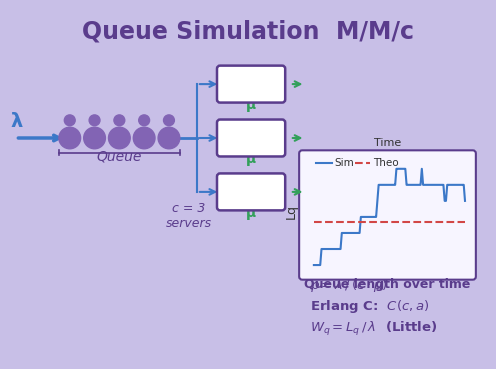

Forecast of a univariate equally spaced time series with TensorFlow
Forecast of univariate and equally spaced time series via various neural network taxonomies implemented with TensorFlow without writing code but only via command line.
More...

NablaVis: an interactive educational tool to visualize three applications of Stokes' Theorem
An interactive web-based educational tool to visualize and understand three classical applications of Stokes' Theorem: Green's Theorem, Divergence Theorem, and Stokes' Theorem for surface integrals.
More...

Differential Equations and Neural Networks
This page is an index of posts posts of this website that deal with some specific topic
related to differential equations and neural networks.
More...

Analyzer of a nonlinear autonomous dynamical system on the plane by Hartman-Grobman theorem
The post presents a Python program that analyzes the behavior of a nonlinear and autonomous dynamic system on the plane
given two differential equations put into a system.
Precisely, the program calculates the critical points, calculates the Jacobian at the critical points, verifies that they are hyperbolic
and in this case it studies the behavior at the critical points linearizing around these points by applying Hartman-Grobman theorem.
More...

NOT and C-NOT quantum gates
This post deals with the topic of quantum gates NOT (X-Pauli) and C-NOT (Controlled NOT) and the underlying quantum phenomena involved;
also illustrates the use of these gates by a high level language
and finally it shows the respective behaviours both in the case of pure states only and in the presence of superposition states.
More...

Queue Simulation with M/M/c Algorithm
Queue simulation with M/M/c algorithm: analysis and implementation of a multi-server queueing system using the M/M/c model from queueing theory.
More...